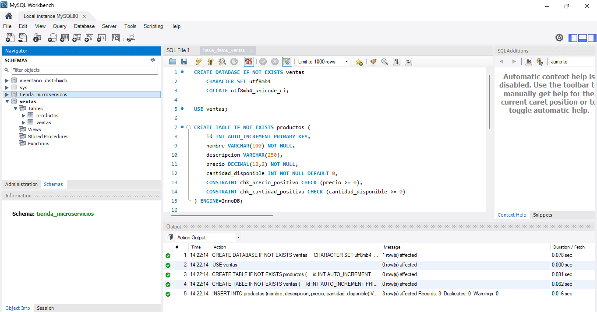
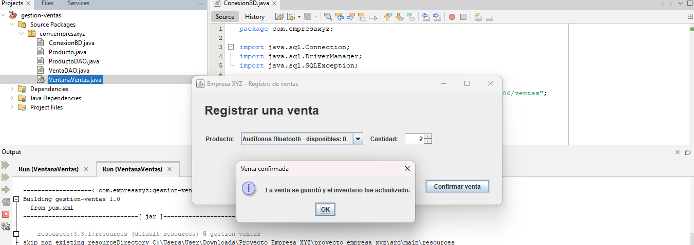
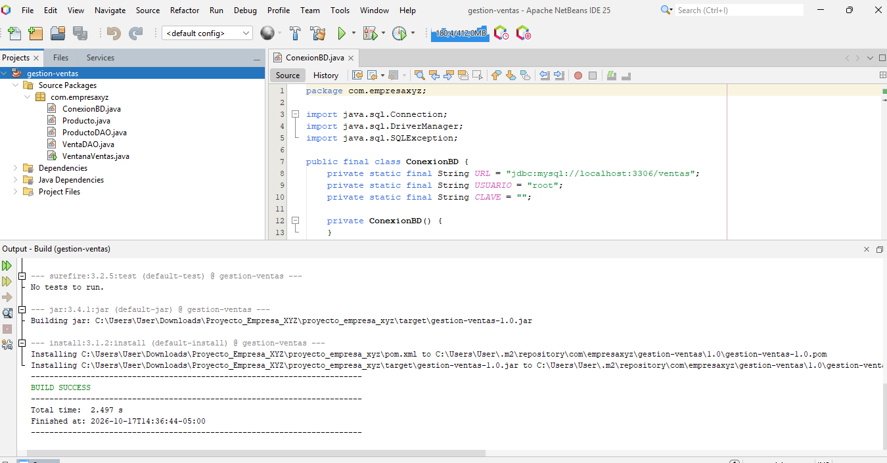
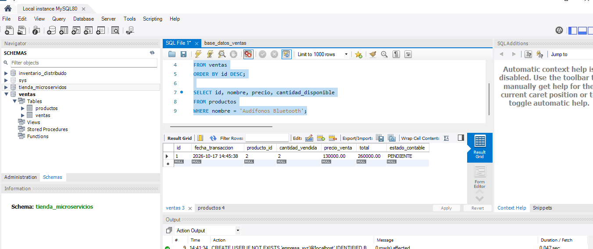
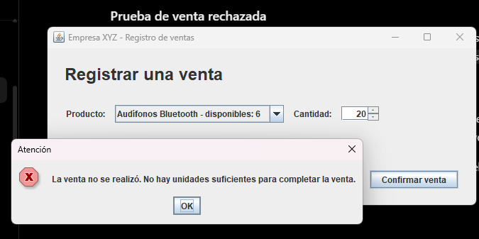
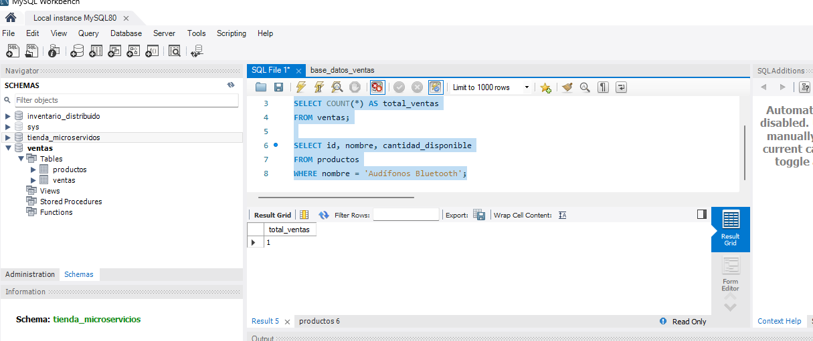
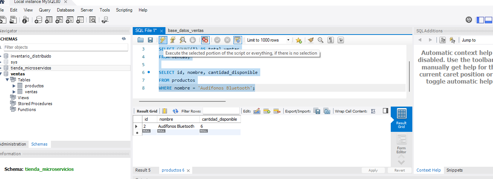

Información que coincida
El vendedor debe registrar el producto, la cantidad y el precio. Al mismo tiempo, el sistema tiene que reducir las existencias correctas. Ambas acciones deben terminar juntas.
Cartilla digital · Sistemas Transaccionales
Diseño de un sistema de ventas e inventario para la empresa XYZ, explicado desde una situación cotidiana y con ejemplos claros.
Imagen generada específicamente para esta cartilla.
El punto de partida
XYZ es una tienda de electrónicos que necesita saber qué vendió, cuánto queda disponible y cuál fue el valor de cada operación. El problema aparece cuando la venta se guarda, pero el inventario no cambia, o cuando se descuentan unidades sin registrar la compra.
El vendedor debe registrar el producto, la cantidad y el precio. Al mismo tiempo, el sistema tiene que reducir las existencias correctas. Ambas acciones deben terminar juntas.
La propuesta utiliza Java para la pantalla y MySQL para guardar la información. Si alguna parte falla, los cambios se cancelan y los datos regresan a su estado anterior.
“La meta no es guardar más datos, sino evitar que una misma venta deje versiones diferentes de lo ocurrido.”
Pregunta orientadora 1
La arquitectura es la manera en que se reparten las responsabilidades. En este caso se organiza en seis partes que se conectan entre sí.
Síntesis basada en Valderrey (2014a) y Hueso (2014).
Pregunta orientadora 2
No hay una única organización válida. La decisión depende del tamaño de la empresa, la cantidad de usuarios y la necesidad de compartir información.
Separa la pantalla, las reglas y el acceso a los datos. Es muy utilizado porque permite modificar una parte sin desordenar las demás. Para el caso de XYZ ofrece el equilibrio más claro entre sencillez y posibilidad de crecimiento.
La aplicación depende de un servidor principal. Puede ser suficiente para una tienda pequeña y facilita la administración, aunque una falla central puede detener el servicio completo.
La información o las tareas se reparten entre varios equipos. Ayuda cuando existen varias sedes o muchas operaciones, pero requiere una coordinación más cuidadosa.
Ventas, inventario y contabilidad trabajan como módulos separados. Esto permite que cada área crezca de forma independiente, siempre que las comunicaciones se controlen para no repetir operaciones.
Comparación elaborada a partir de Valderrey (2014a) y Hueso (2014).
Del diseño a la práctica
Cada fase responde a una necesidad concreta de la tienda.
Imagen generada específicamente para esta cartilla.
Desarrollo del proyecto
La propuesta no se limita a crear tablas. También contempla la pantalla de uso, las clases Java, la protección de los cambios y la comunicación con otras áreas.
Se creó la base ventas en MySQL. La tabla productos conserva nombre, descripción, precio y cantidad disponible. La tabla ventas guarda fecha, producto, cantidad, precio, total y estado contable.

ventas quedó creada con sus tablas y productos iniciales.La pantalla mantiene una tarea visible: seleccionar el producto, indicar la cantidad y confirmar. Al abrirse, consulta en MySQL los productos y sus existencias actuales. Después de cada venta vuelve a leer el inventario, por lo que el vendedor observa de inmediato la cantidad disponible. Los mensajes explican si la operación terminó o por qué fue cancelada.

Cada clase atiende una responsabilidad. Esta organización evita mezclar la pantalla con las consultas y permite comprender mejor el proyecto. El conector MySQL para Java abre la comunicación, mientras que ProductoDAO contiene las operaciones para crear, consultar, actualizar y eliminar productos. VentaDAO registra la venta y actualiza las existencias dentro del mismo proceso.

El descuento del inventario y el registro de la venta se tratan como una sola operación. Commit confirma los cambios cuando todo sale bien. Rollback los deshace cuando aparece un error.




Verificación después de cancelar: continuó existiendo una sola venta y el inventario permaneció en seis unidades. No quedaron cambios parciales.
Cada venta queda identificada con un estado contable pendiente. Este dato permite que otro sistema consulte únicamente las operaciones que aún no ha recibido. Cuando contabilidad confirma el registro, el estado puede cambiar a procesado. Si la comunicación falla, la venta permanece guardada y el envío se intenta nuevamente sin repetir el descuento del inventario.
Evidencia del proceso
El proyecto complementario contiene la base de datos, las clases Java y una pantalla para registrar ventas. La imagen representa el espacio de desarrollo; la comprobación definitiva se realiza al ejecutar el proyecto en NetBeans y MySQL.
Imagen generada específicamente para esta cartilla.
Simulación educativa
Escoge un producto y una cantidad. Después podrás confirmar o cancelar la operación. El panel mostrará qué ocurre con el inventario, el registro de ventas y el envío a contabilidad.
Si existe inventario, se guarda la venta y se descuentan las unidades.
Si la cantidad supera las existencias, no se guarda nada y el inventario sigue igual.
Escenario real
Para el vendedor es un solo clic. Detrás de la pantalla, el sistema valida la cantidad, registra la compra y actualiza el inventario.
Imagen generada específicamente para esta cartilla.
Seguridad de los datos
La protección no depende de una sola herramienta. Se construye al combinar controles sencillos y constantes.
Cada vendedor utiliza su propia cuenta y solo ve las funciones que necesita.
El sistema rechaza cantidades incorrectas y evita instrucciones peligrosas en los formularios.
Los respaldos se realizan con frecuencia y también se prueba que puedan restaurarse.
Se conserva quién realizó cada venta, en qué momento y si fue anulada.
Medidas sintetizadas a partir de Valderrey (2014b).
Respaldo y continuidad
La empresa necesita respaldos frecuentes, pero también debe comprobar que puedan recuperarse. Esa verificación reduce el tiempo de interrupción cuando aparece un daño o una eliminación accidental.
Imagen generada específicamente para esta cartilla.
Integración
Cuando ventas, inventario y contabilidad comparten la operación, la empresa evita escribirla varias veces y reduce diferencias entre áreas.
Imagen generada específicamente para esta cartilla.
Reflexión final
El sistema se compone de interfaz, reglas, conexión, base de datos, control de transacciones e integración. Los enfoques centralizado, por capas, distribuido y por servicios se eligen según el tamaño y la necesidad de crecimiento. Para XYZ, la organización por capas resulta clara y suficiente.
Registrar una venta implica más que guardar una fila. La información solo es confiable cuando el inventario cambia al mismo tiempo, los errores pueden deshacerse y las demás áreas reciben exactamente la misma operación.
Referencias
Solo se incluyen los recursos utilizados para orientar el contenido conceptual.
Hueso, L. (2014). Bases de datos distribuidas. En Gestión de bases de datos (2.ª ed., pp. 274-284). RA-MA Editorial.
Valderrey, P. (2014a). Sistemas gestores de bases de datos distribuidos. En Administración de sistemas gestores de bases de datos (pp. 235-248). RA-MA Editorial.
Valderrey, P. (2014b). Seguridad de los datos. En Gestión de bases de datos (pp. 211-234). RA-MA Editorial.
Página legal y créditos
Autor: Wilfer Daney Bueno Andica
Programa: Ingeniería de Sistemas
Institución: Corporación Universitaria Minuto de Dios - UNIMINUTO
Docente: Angela Consuelo Rodriguez Gaitan
Fecha: 17 de octubre de 2026
Las ilustraciones temáticas fueron generadas específicamente para esta cartilla. Las capturas de MySQL Workbench y Apache NetBeans corresponden a la ejecución real del proyecto descrito. El contenido se preparó con fines académicos y las fuentes conceptuales se encuentran en la sección de referencias.